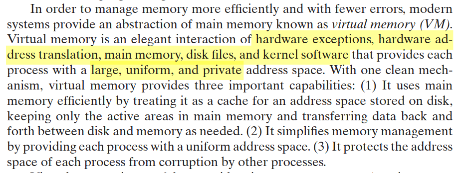
一、虚拟内存概述 #
1.1 存储体系 #
操作系统协调各级存储器的使用，从上到下：寄存器 → 缓存 → 内存 → 磁盘。目标是让"内存"速度尽量快（匹配 CPU 取指速度），容量尽量大（能装下当前运行的程序与数据）。
进程的虚拟地址空间横跨整个存储体系，物理内存和磁盘结合起来，提供一个大容量的"虚存"。
1.2 核心术语 #
| 术语 | 含义 |
|---|---|
| 虚拟内存（虚存） | 把物理内存与磁盘结合，得到一个容量很大的"内存" |
| 虚拟地址空间 | 分配给进程的虚拟内存 |
| 虚拟地址 | 虚拟内存中某一位置的地址，可被自动转换成物理地址 |
| 虚拟存储技术 | 进程运行时先装入一部分到内存，其余暂存磁盘；访问的数据不在内存时，由操作系统自动从磁盘调入 |
虚存大小受计算机寻址机制和可用磁盘容量的限制。虚拟地址空间是对内存的抽象——进程使用虚拟地址，通过 MMU 转换得到物理地址，仿佛能直接访问内存。
1.3 虚拟内存管理的目标 #
- 透明性：进程感觉不到虚拟内存的存在
- 效率：地址转换和缺页处理的开销尽量小
- 保护：进程间地址空间隔离
二、虚拟页式存储管理 #
在开始之前可以先回忆一下上一节的内存管理方案的演进：

这里使用的是页式管理。
基本思想是：
- 装载程序时，只装入几个甚至零个页面
- 进程执行时需要不在内存的页面（Page Fault），则动态装入所需页面（请求调页 demand paging）
- 需要空间时，将暂时不用的页面交换到磁盘
- 也可采用**预先调页（prepaging）**减少缺页次数
本质是操作系统的资源转换技术——以 CPU 时间和磁盘空间换取物理内存空间。
虚拟页式系统（Paging）调页的三个策略（Coffman & Denning）：
- 取页策略（fetch policy） ：何时把页面载入内存
- 放置策略（placement policy） ： 页面放在何处
- 置换策略（replacement policy） ：页框不足时，删除哪些页
三、硬件机制：地址转换 #
3.1 MMU 工作原理 #
CPU → 虚拟地址 → [MMU] → 物理地址 → 内存MMU（Memory Management Unit）完成虚拟地址到物理地址的转换。如果转换失败（页面不在内存、非法访问、保护违例），硬件产生异常，陷入操作系统执行缺页处理程序。
3.2 地址转换过程 #
这是硬件机制：
if (虚拟页面不在内存 || 页面非法 || 被保护) {
硬件产生异常 → 操作系统执行 Page Fault 服务程序
} else {
页框号 = 页表[虚页号]
物理地址 = 页框号 || 页内偏移
}第一个if语句中的都算是Page Fault。其中第一个虚拟页面不在内存，具体需要从哪里来找内容（如磁盘、交换区）可以参考Linux源码，我在另一篇文章(在9.2.3节中的第(3)个小节部分)中进行了简单的窥探，可以去阅读一下。此外也可以阅读9.2.2小节内容进一步了解缺页异常处理。
Page Fault是这三个分支的总称——MMU在地址转换过程中发现任何问题，硬件都触发同一个异常（x86 上中断号0xe），然后操作系统根据原因分派处理；缺页异常只是其中"页面不在内存"这一种——PTE 的 P 位为0，映射关系存在但页面当前不在物理内存，需要从磁盘/交换区调入。
3.3 x86 保护模式下的寻址 #
x86 提供段式 + 页式两级转换：逻辑地址 →（段式转换）→ 线性地址 →（页式转换）→ 物理地址。Linux 通过将段基址设为 0 来绕过分段机制，实际上只使用页式转换。
四、页表 #
4.1 页表项（PTE）设计 #
| 字段 | 含义 |
|---|---|
| 页框号（PFN） | 物理页面号 |
| 有效位/驻留位/中断位（P/Present） | 该页在内存还是磁盘 |
| 访问位/引用位（A/Accessed） | 是否被访问过 |
| 修改位（D/Dirty） | 是否在内存中被修改过 |
| 保护位（R/W, U/S） | 读/写/执行权限 |
| PWT | 缓存写策略（Write Through） |
| PCD | 禁止缓存（Cache Disable） |
页表项中 P 位为 0 时引发缺页异常（由硬件检测，操作系统处理）。
4.2 多级页表 #
为什么要多级？ 32 位地址空间，4K 每页，用户空间占一半是2^31次方字节。每个进程需要有2^19个页表项，每个页表项是4字节，也就是需要2^21字节的页表项，也就是需要 512 个页（2MB）。光是页表就需要这个多个页；而且还需要这512个页连续在内存中存放。64 位更是天文数字。页表本身太大，且各页在内存中不连续存放。
解决思路：将数组结构转为树形结构。
- 一级页表（页目录）：索引指向二级页表
- 二级页表：索引指向实际页面
比如对于上面的例子，用二级列表，第一级是1024个页表项，每个页表项存的是第二级页表的起始地址，第一级页表自身占用了1页；一共有1024个第二级页表，每个页表项存的是一个物理地址页，第二级页表自身占用了1024页。而能够存储的物理页的总数是：1024个第二级页表，每个第二级页表存1024个物理页，也就是2^20个物理页。在上面没分级的例子中，每个进程需要有2^19个页表项，采用分级也是足够的。
然而分级后的页表不一定会更省空间，二级的页表会使用1025个页来存页表。但，实际进程的地址空间是稀疏的——代码在低地址、栈在高地址、中间大片未用。单级页表不管用不用都得分配完整的 512 页（数组必须连续），而两级页表：未使用的虚拟地址区间对应的页目录项（PDE）标记为无效，其二级表根本不分配。一个典型进程可能只需要页目录 1 页 + 实际用到的几个二级表 = 不到 10 页。这就是稀疏的好处，在通常情况下页表使用的页是低于一级页表的。

Core i7 四级页表结构（48 位虚拟地址）：
VPN4 → VPN3 → VPN2 → VPN1 → 页内偏移
9 9 9 9 12
L4 PDE → L3 PDE → L2 PDE → L1 PTE → 物理地址对于四级，页表需要的页数：1 + 512 + 512^2 + 512^3
CR3 寄存器保存页目录的物理地址。
4.3 反转页表（Inverted Page Table） #
传统页表从虚拟地址出发查页框号，每个进程一张。反转页表从物理地址出发，系统只建一张表，表项记录 “进程 i 的虚页号 → 页框号” 的映射。
- 优势：页表大小与实际内存成固定比例，与进程数无关
- 实现：将虚页号 + PID 散列到一个反转页表项，需要拉链解决冲突
- 采用体系结构：PowerPC、UltraSPARC、IA-64

五、TLB — 加速地址转换 #
5.1 为什么需要 TLB #
页表至少需要两次内存访问（查页目录 + 查页表）。CPU 速度与内存访问速度差异大，必须加速地址映射。
5.2 TLB 原理 #
- TLB（Translation Look-aside Buffer）：相联存储器，按内容并行查找
- 保存当前进程页表的子集（部分表项）
- 工作原理：采用联想映射技术，同时比较虚拟页号，命中则直接返回页框号
5.3 关键问题 #
| 问题 | 解决 |
|---|---|
| TLB 大小/位置 | 一般在 MMU 内部，容量很小 |
| TLB 置换 | 类似页面置换（LRU 等） |
| 进程切换 TLB 刷新 | PCID（x86）/ ASID 标识不同地址空间，避免频繁刷新 |
每个进程分配一个唯一的PCID/ASID，TLB比较时多一步：虚页号 + PCID,同时匹配才叫命中。这样进程 A 的 TLB 项和进程 B 的 TLB项可以共存，切来切去互不污染，大幅减少刷新带来的性能损失。在多处理器的亲和性和负载均衡讨论（操作系统笔记4：进程与线程调度，五、一些实例：多处理器调度）中，TLB的这种处理对于亲和性是友好的，但是对于后者是不友好的。
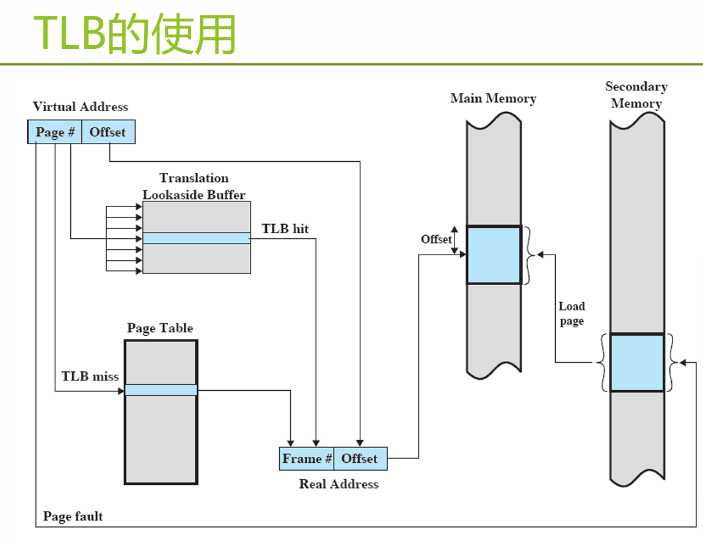
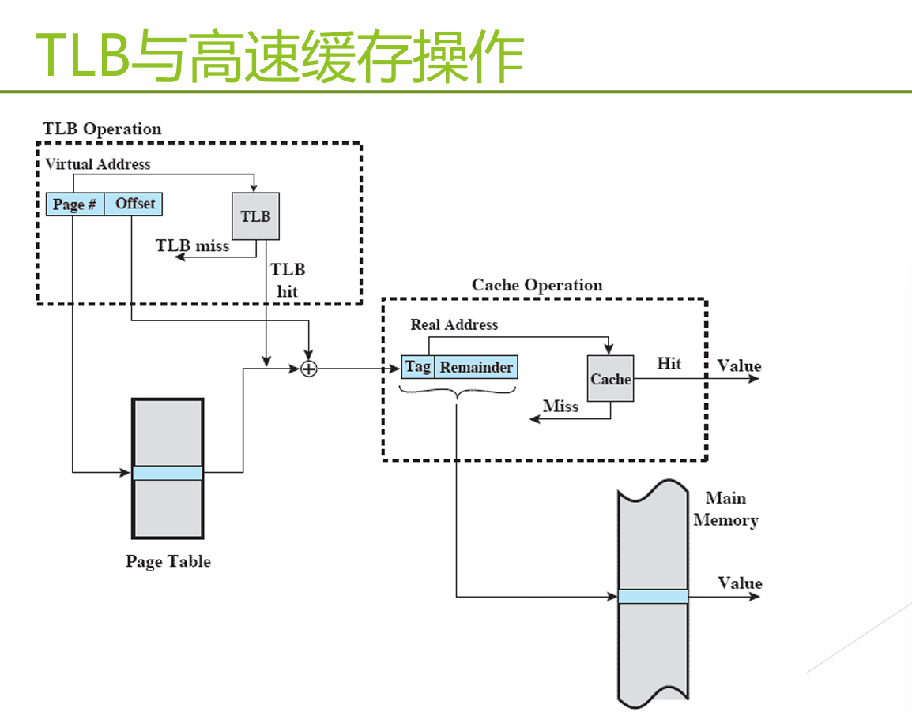
六、缺页异常处理 #
缺页异常是最常见的 Page Fault。地址映射过程中，硬件检查页表时发现所要访问的页不在内存，产生缺页异常。
处理流程是：
- 获得缺页的磁盘地址（从哪找？从PCB找，找可执行的相关信息）
- 启动磁盘，将该页面调入内存（
demand paging） - 如有空闲页框 → 直接分配，修改页表项的驻留位和页框号
- 如无空闲页框 → 置换某一页；若被置换页在内存期间被修改过，需写回磁盘（具体的相关置换算法在下面的7.2小节中）
- 可能预取相邻页面（
prepaging）
常见引发场景：
- 页面未提交（不在内存）
- 违反权限访问
- 修改私有 COW 页面
- 需要扩大栈
- 页面已提交但尚未映射
- 请求零页面
七、软件策略 #
7.1 驻留集管理 #
驻留集：当前时刻，进程实际驻留在内存中的页框集合。
这里给出一个缺页率和分配给进程的页框数目（驻留集大小）之间的关系图：

可以看出若分配给进程的页框较多的时候，即使其缺页率降低了但是也有可能会影响到其他的进程。那么为了保证平衡性，对于驻留集大小的管理有两者策略：
| 策略 | 说明 |
|---|---|
| 固定分配 | 进程创建时确定页框数 |
| 可变分配 | 根据缺页率动态调整（缺页率高 → 增加，缺页率低 → 减少，也就是调节到上图中的W位置） |
7.2 页面置换算法 #
replacement，这里讲的是当硬件发现page fault的时候，如果内存没有空闲页框了，就需要牺牲一个旧页框，也就是置换。
置换范围：计划置换页面的集合是局限在产生缺页异常的进程，还是所有进程的页框？
全局置换：将内存中所有未锁定的页框作为置换候选。 局部置换：仅在产生本次缺页的进程驻留集中选择。
| 局部置换 | 全局置换 | |
|---|---|---|
| 固定分配 | √ | — |
| 可变分配 | √ | √ |
以下介绍一些算法，总体的目标是置换最近最不可能访问的页。根据局部性原理，最近的访问历史和最近将要访问的模式间存在相关性，因此，大多数策略都基于过去的行为来预测将来的行为（和MLFQ类似的设计思想，这里举一个投递简历的例子，简历是过去的行为，面试官以此来预测未来的工作表现）。。设计越精致，实现开销越大。
此外，还需要考虑一个约束条件：不能置换被锁定的页框，比如，正在IO的进程所正在使用着的。
为什么要锁定页面？因为采用虚存后，程序运行时间变得不确定。给每一页框增加一个锁定位，通过设置相应的锁定位，不让操作系统将进程使用的页面换出内存，避免产生由交换过程带来的不确定的延迟。例如：操作系统核心代码、关键数据结构、I/O缓冲区…
7.2.1 OPT（最佳置换算法） #
置换以后不再需要的或最远的将来才会用到的页面。不可实现，作为理论基准。
7.2.2 FIFO（先进先出） #
置换驻留时间最长的页。实现简单，但可能淘汰重要页面，且存在 Belady 现象（分配的页框数增加，缺页次数反而增加）。实现：用链表。
7.2.3 Second Chance（第二次机会） #
FIFO 的改进：检查访问位 R，若 R=0 则置换；若 R=1 则给第二次机会，将 R 置 0。
R位可以看作是读取过这个页，会定期清理，不会永远为1否则没有意义了。
7.2.4 Clock（时钟算法） #
页框组织成循环缓冲区，指针轮转。是 Second Chance 的工程实现。
7.2.5 NRU（最近未使用） #
Not Recently Used
根据 R（访问位）和 M（修改位）将页面分为四类：
| 类别 | R | M | 说明 |
|---|---|---|---|
| 第 0 类 | 0 | 0 | 无访问，无修改 |
| 第 1 类 | 0 | 1 | 无访问，有修改 |
| 第 2 类 | 1 | 0 | 有访问，无修改 |
| 第 3 类 | 1 | 1 | 有访问，有修改 |
发生缺页异常时，随机从类编号最小的非空类中选择一页置换。优先选择不需写回磁盘的页面，节省时间。
7.2.6 LRU（最近最久未使用） #
Least Recently Used
置换最后一次访问时间距离当前最远的一页。性能接近 OPT，但实现开销大（需时间戳或维护访问栈）。
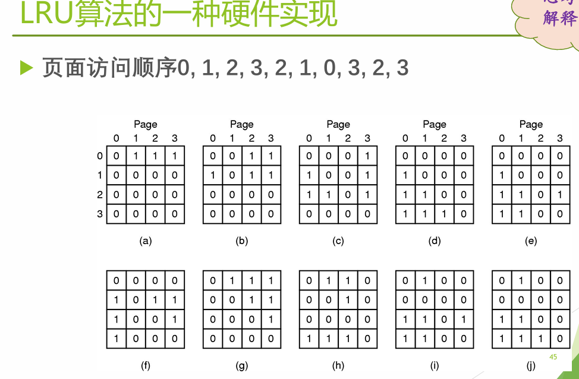
这是用硬件矩阵实现 LRU 的经典做法。原理如下：
数据结构：N 个页框 → 一个 N×N 的位矩阵（硬件寄存器阵列），初始全 0。访问规则：当访问第 k 号页框时，硬件同步做两个操作：(1) 第 k 行全部置 1 ；(2) 第 k 列全部置 0
含义：矩阵中 bit(i, j) = 1 表示"页框 i 比页框 j 更近被访问过"。当访问页框 k 后，行 k 全 1 意味着" k 比所有页框都更新"，列 k 全 0 意味着"没有页框比 k 更旧"。
找 LRU 页：读取每一行的二进制值，值最小的行对应的页框就是 LRU。
7.2.7 NFU（最不经常使用）与 Aging（老化算法） #
Not Frequently Used
NFU：软件计数器，每页一个。每次时钟中断，计数器 += R。缺页时选计数器最小的置换。
Aging：改进版——计数器加 R 前先右移一位，R 加到最左端。模拟 LRU，近似效果很好。
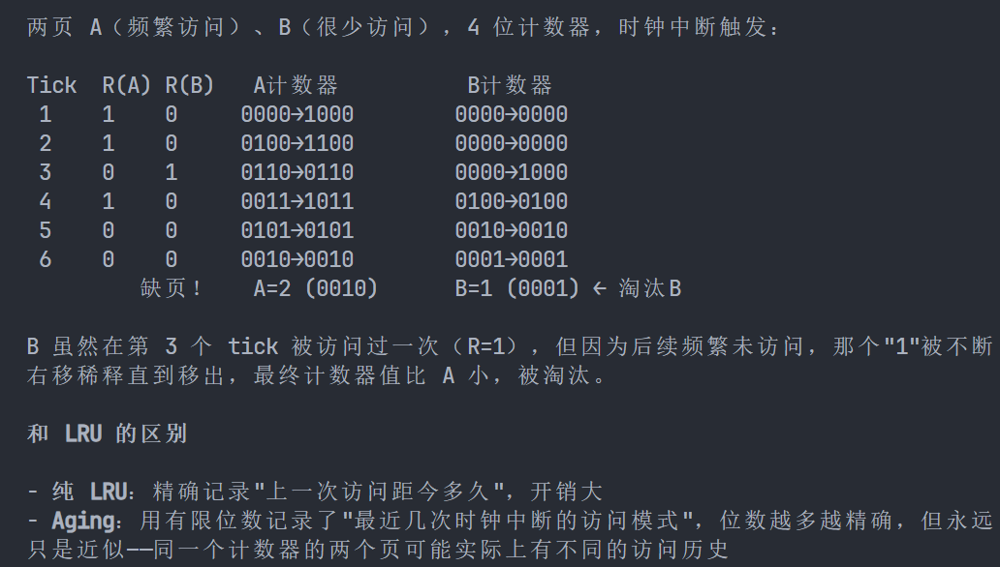
7.2.8 工作集算法 #
基本思想：根据程序的局部性原理，一般情况下，进程在一段时间内总是集中访问一些页面，这些页面称为活跃页面，如果分配给一个进程的页框太少了，使该进程所需的活跃页面不能全部装入内存，则进程在运行过程中将频繁发生中断。如果能为进程提供与活跃页面数相等的页框数，则可减少缺页异常次数。
工作集 W(t, Δ) = 在当前t时刻，进程在过去的Δ个虚拟时间单位中使用的虚拟页面集合。
- 工作集是进程固有性质；驻留集取决于系统分配策略
- 核心思路：从驻留集中找出当前不在工作集中的页面并置换它，使得驻留集向着工作集逼近
- 实现：记录每页最后访问时间，超出"当前时间 − T"的页面被置换
缺页率算法：设置缺页率上下阈值，动态调整驻留集大小。这是一个类似于工作集的方法。
7.3 算法总结 #
| 算法 | 评价 |
|---|---|
| OPT | 不可实现，作为基准 |
| NRU | LRU 的粗略近似 |
| FIFO | 可能淘汰重要页面，有 Belady 现象 |
| Second Chance | 比 FIFO 有很大改善 |
| Clock | 现实可用 |
| LRU | 优秀但难实现 |
| NFU | LRU 的相对粗略近似 |
| Aging | 非常近似 LRU |
| Working Set | 开销很大 |
| WSClock | 好的有效算法 |
7.4 影响缺页次数的因素 #
- 页面置换算法
- 页面大小（最优尺寸
P = √(2se)） - 程序编制方法（按行访问 vs 按列访问，差异巨大）
- 分配给进程的物理页面数
颠簸/抖动（Thrashing）：页面在内存与磁盘之间频繁调度，调度开销超过进程实际运行时间，系统效率急剧下降。
7.5 清除策略 #
分页系统工作的最佳状态是，发生缺页异常时，系统中有大量的空闲页框，保存一定数目的页框供给 比 使用所有内存并在需要时搜索一个页框 有更好的性能。现代操作系统会使用一定的策略来实现，不仅仅是简单的按需调页。
在Linux中有一个分页守护进程（paging daemon），多数时间处于睡眠，会定期检查内存，保持一定数量的空闲页框；若过少，就会用预设的页面置换算法来选择页面换出内存，若页面装入内存后被修改过旧写回磁盘，保证所有空闲页框是干净的。
清除策略说的就是，当需要使用一个已置换出的页框时，如果该页框还没有被新内容覆盖，则将它从空闲页框缓冲池中移出即可恢复该页面。具体实现来说可能只是在PTE的V位设置成0或者1的过程，在某一个页被换出的时候把V设置为0，但是后续在用这一页的时候会造成缺页异常，这时可以直接从缓冲池中恢复。一种具体的方法是双指针时钟：前指针（paging daemon 控制）写回脏页；后指针（置换时使用）命中干净页概率增加。
在Windows中有页缓冲技术：被置换的页保留在内存（未修改 → 空闲链表，已修改 → 修改链表），可快速恢复
7.6 加载控制 #
通过调节系统并发度（驻留在内存中的进程数）进行负载控制。必要时挂起进程，将其页面交换到磁盘。
八、内存映射文件 #
8.1 mmap() 机制 #
进程通过 mmap() 将文件映射到虚拟地址空间，访问文件像访问内存中的大数组，从而避免了使用read、write等系统调用来操作文件。
void *mmap(void *start, size_t length, int prot,
int flags, int fd, off_t offset);作用是将指定文件fd中偏移量offset开始的长度为length个字节的一块信息映射到虚拟空间中起始地址为start、长度为length个字节的一块区域。得到vm_area_struct结构的信息，并生成相应页表项，建立文件地址和区域之间的映射关系。
注意，这里仅仅是生成页表项和建立映射关系，还没有真正地将文件内容映射到内存中。
prot（访问权限）：
| 标志 | 含义 |
|---|---|
| PROT_READ | 可读 |
| PROT_WRITE | 可写 |
| PROT_EXEC | 可执行 |
| PROT_NONE | 不可访问 |
这些也对应vm_area_struct结构中的vm_prot字段。
flags（映射类型）：
| 标志 | 用途 |
|---|---|
| MAP_PRIVATE | 私有的写时拷贝对象，对应可执行文件中只读代码区域（.init, .text, .rodata），和已初始化数据区域（.data） |
| MAP_SHARED | 对应共享库文件中的信息 |
| MAP_ANON | 请求零页面（匿名文件） |
| MAP_PRIVATE / MAP_ANON | 未初始化数据 .bss、堆、栈 |
- 第一次访问时会慢（缺页调入），之后跟访问内存一样快（已在页缓存中）
- 两个进程 mmap 同一文件 → 看到的是同一份物理页（MAP_SHARED）
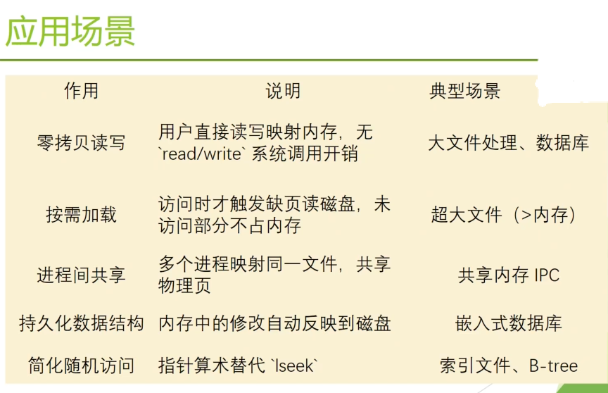
内存映射文件的应用：LMDB（Lightning Memory-Mapped Database），是内存映射型数据库，通过使用内存映射文件，可以提供更好的输入/输出性能，对于用于神经网络的大型数据集( 比如ImageNet)，可以将其存储在LMDB中。
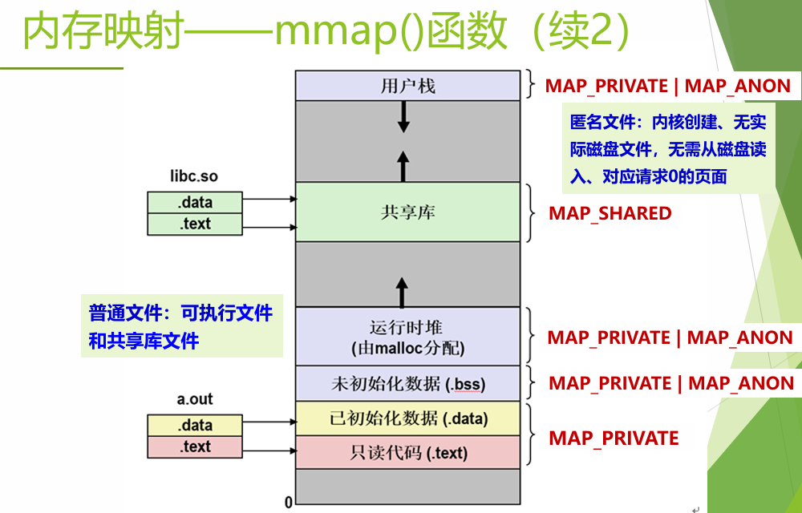
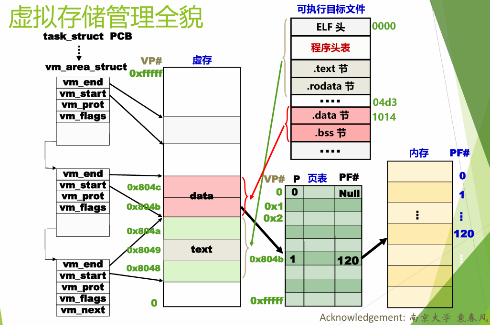
对于共享对象，只需要在内存和磁盘保存一份即可，对于进程而言只需要在页表中对页框号进行映射即可；同时对于共享文件的写操作也要保持同步，对于其他进程要可见结果、对于磁盘也要更新。
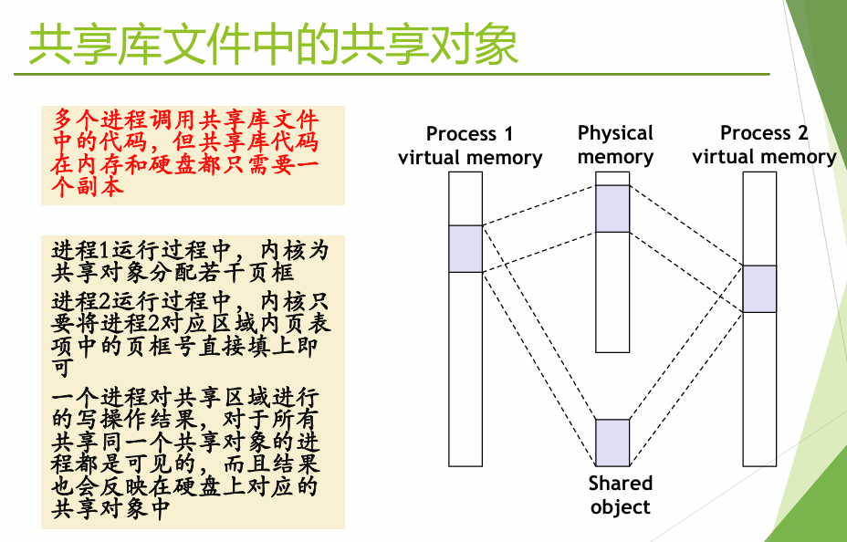
8.2 写时复制（COW）与 fork() #
COW（Copy-On-Write）：多个进程共享同一物理页，标记为只读。当某个进程尝试写入时，触发缺页异常，内核分配新页框并复制内容。
UNIX的原始fork流程是：
为子进程分配一个空闲的进程描述符 proc 结构 -> 分配给子进程唯一标识pid -> 以一次一页的方式复制父进程地址空间 -> 从父进程处继承共享资源，如打开的文件和当前工作目录等 -> 将子进程的状态设为就绪，插入到就绪队列 -> 对子进程返回标识符0 -> 向父进程返回子进程的pid
其中一次一页方式复制太低效了，Linux的解决方案是利用存储管理模块中的“写时复制技术”COW（Copy-On-Write）对fork()进行了优化：
fork() + COW：
- 创建子进程的
mm_struct、vm_area_struct、页表的精确副本 - 将两个进程的每个页面标记为只读
- 将每个
vm_area_struct标记为私有 COW - 返回时父子进程都有虚拟内存的精确副本
- 后续写入通过 COW 机制创建新页面（也是在
page fault的处理流程当中）
因此，如果父子进程都只读，物理页不会被真正复制，这就是 fork() 能快速返回的原因。
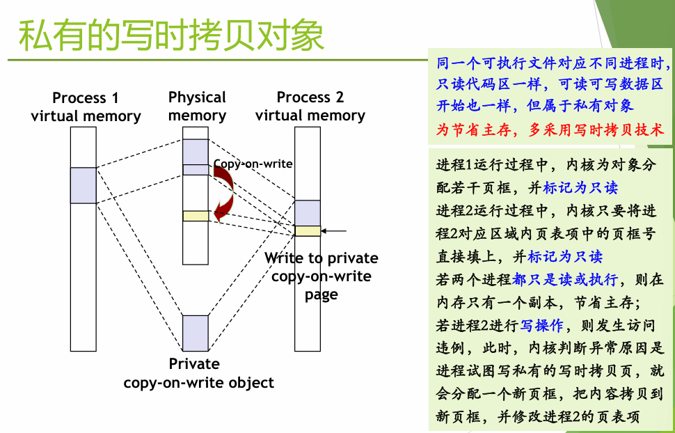
九、Windows 虚拟内存管理（补充） #
Inter x86 段页式：逻辑地址 -> 段选择符 → 段描述符(段式转换) → 线性地址(此时相当于只有一个段了，分页机制开启) → 页目录/页表(页式转换) → 物理地址
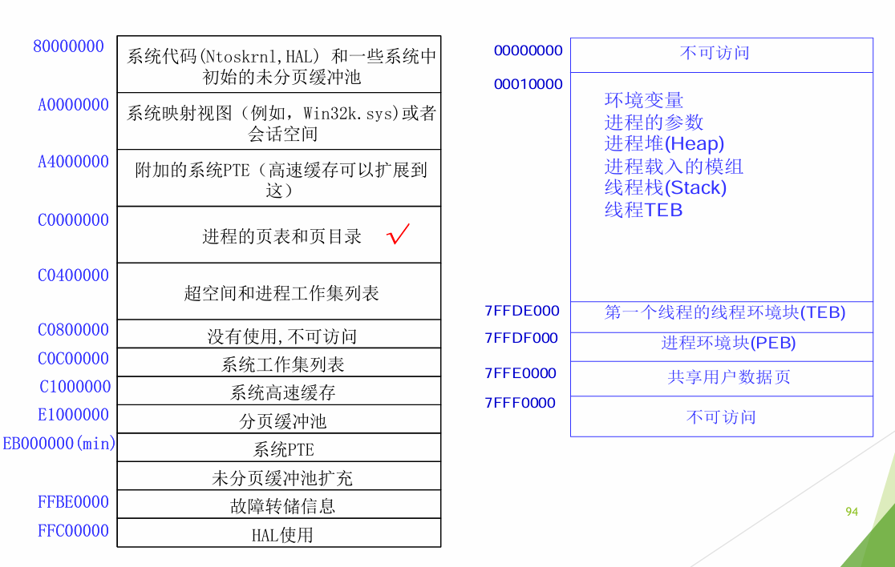
对于缺页异常，页目录项PDE和页表项PTE的最低位为1，有效(Valid)，表示该页映射了物理内存。当要访问的虚拟页在物理内存中时，该虚拟页对应的PDE、PTE 都有效，CPU 根据相应的PDE、PTE自动把虚拟地址转换成物理地址，完成访问，这一过程操作系统不需介入如果要访问的虚拟页在不物理内存，此时的PTE无效（最低位为0）。对无效PTE的格式的定义，由操作系统负责：
无效的PTE：
- 所引用的页面没有被提交（不在内存）
- 违反权限的页面访问
- 修改一个私有共享的写时复制页面
- 需要扩大栈
- 所引用的页已被提交但尚未被映射
- 请求一个零页面
缺页异常中断号 0xe，发生缺页异常时，CPU自动将引发异常的虚拟地址存入CR2，CPU自动根据中断号在中断描述符表中找到对应的描述符，根据描述符中的地址转到异常处理程序KiTrap0E，会调用MmAccessFault ，其通过CR2的地址计算出相应的PDE/PTE地址，通过分析PTE中的内容可以得知是哪种情况引起的异常，并作出处理。
- Windows的页目录
是内存管理器创建的特殊页，用于映射进程所有页表的位置，其物理地址保存在KPROCESS中，硬件访问页目录、页表和页：通过VPN、PFN完成，内核通过虚地址来对它们进行访问。在x86中，它还同时被映射到地址0xC0300000处（在。专用寄存器（x86中为CR3）用于保存页目录的物理地址
- 页目录自映射：利用 PDE[0x300] 自指，可快速计算任意虚拟地址的 PDE/PTE


- Windows中的工作集
是进程在物理内存的所有页框的集合。工作集的大小会改变，当内存访问的局部性区域位置大致稳定时，工作集大小大致稳定；当位置变化时，会快速扩张和收缩过渡到下一个稳定值

同时，Windows还会给每个进程设计一个最大值和最小值的工作集大小，如果超过了最大值就把超过最大值的部分收回。当可用页框数量降低到一定程度时，启动工作集修整策略（因为Windows的缺页策略是**只要缺页就调入一页，需要保证有充足的空闲页框）。
平衡集管理器线程（几秒醒来一次）调用工作集管理器进行周期性检查，是否有大量可用内存、内存开始紧张、内存紧缺。
- Windows用户空间内存分配方式
- 以页为单位的虚拟内存分配方式（函数Virtualxxx）
- 内存映射文件（函数CreateFileMapping, MapViewOfFile）
- 内存堆方法 （Heapxxx和早期的接口Localxxx和Globalxxx）
对于按页分配：
进程地址空间0x0~0x7FFFFFFF，用户程序必须经过“保留”和“提交”两个阶段使用一段地址范围。VirtualAlloc和VirtualAllocEx函数实现这些功能，用户程序可以首先保留地址空间，然后向此地址空间提交物理页面。保留地址空间是为线程将来使用所保留的一块虚拟地址。在已保留的区域中，提交页面必须指出将物理存储器提交到何处以及提交多少；提交页面在访问时会转变为物理内存中的有效页面。VirtualFree或VirtualFreeEx函数回收页面或释放地址空间。
使用VirtualAlloc可以在用户地址空间中保留或者提交指定地址和大小的一段地址空间，那么系统如何知道指定的这段地址空间是不是已经被分配（保留或者提交）？
- 对于指定地址空间是否已经被提交了物理内存，可以通过页目录和页表来判断，不过这样做很麻烦；
- 对于指定地址空间是否已经被保留，通过页目录和页表是没有办法判断的。Windows中使用
VAD来解决这个问题。
对于每一个进程，Windows的内存管理器维护一组虚拟地址描述符（VAD）来描述一段被分配的进程虚拟空间的状态。虚拟地址描述信息被构造成一棵自平衡二叉树以使查找更有效率。VAD类似于Linux中的vm_area_struct。
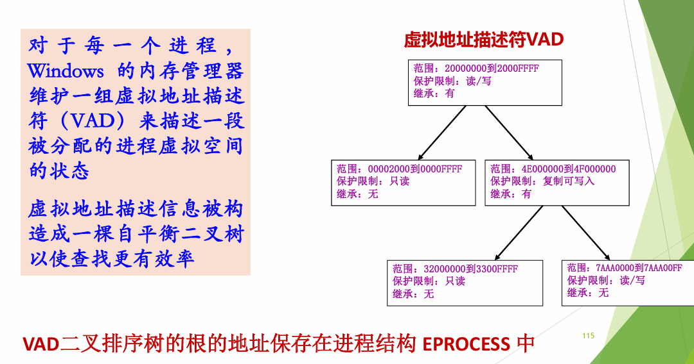
- Windows物理内存管理
在Linux中用的是伙伴系统。在Windows中，有一个页框号数据库（PFN数据库），由结构体MMPFN（24字节）来保存每一个物理页的相关信息和全局变量MmPfnDatabase来保存页框号数据库的首地址。
对于每个物理页面有7种状态：
- 活动（Active）/有效（Valid）：该页框在某个进程的工作集中。此进程的对应页表项是有效的，从高20bit可获得PFN。
- 过渡（Transition）：系统正在从一个文件将内容读入该页框，或者正在向一个文件写出该页框的内容
- 空闲（Free）：该页框中的内容不再被需要
- 零初始化（zeroed）：该页框空闲并且已经被用零初始化
- 坏（Bad ）：该页框存在硬件错误，不能被使用
- 后备(standby)：该页框曾经在某个进程的工作集中，且该页框的内容在被此进程使用时没有改变。该页框现在已被移出该进程的工作集，但页框中的内容仍是此进程的内容，即对应的PTE中的高20bit仍然是该页框号，只是该PTE被标记为invalid 和transition。当此进程需要再次访问这一页内容时，只需要重新设定该PTE的标志，并把该PTE变为有效，即把该页框从standby 状态变为active(valid) 状态即可
- 修改（Modified ）：该页框曾经在某个进程的工作集中，且该页框的内容在被此进程使用时有改变。该页框现在已被移出该进程的工作集，但页框中的内容仍是在此进程的内容，即对应的PTE中的高20bit仍然是该页框号，只是该PTE被标记为invalid 和transition。当此进程需要再次访问这一页内容时，只需要重新设定该PTE的标志，并把该PTE变为有效，即把该页框从modified 状态变为active(valid) 状态就可以了。在该页框被系统作为其他用途使用之前，需要将该页框中的内容写入硬盘中的页文件中
对于6和7，参考在本文上方7.5节的清除策略的第一段文字：
分页系统工作的最佳状态是，发生缺页异常时，系统中有大量的空闲页框，保存一定数目的页框供给 比 使用所有内存并在需要时搜索一个页框 有更好的性能。现代操作系统会使用一定的策略来实现，不仅仅是简单的按需调页。
这里和Linux的清除策略类似。这里也就是Windows的页缓冲技术，在7.5节末尾提及。
下图展示了 Windows 中页框数据库（PFN Database）各个状态之间的转换关系：


Windows 的 PFN 数据库为每个物理页框维护一个状态，各状态之间转换的场景如下：
8 Zeroed → Active（零页分配）：进程调用 malloc、栈扩展或 COW 需要新页时，内存管理器直接从 Zeroed 链表头取一个已归零的页框分配出去。这也是 Windows 后台有一个零页线程一直在清空 Free 页面的原因。
2 Active → Modified（脏页移出工作集）：工作集管理器检测到某进程驻留集过大，将其部分页面移出。若该页在内存期间被修改过（D=1），不能直接丢弃——必须后续写回磁盘（文件映射页写回文件，匿名页写回页面文件），先放入 Modified 链表。
3 Active → Standby（干净页移出工作集）：同样是工作集修剪，但该页未被修改（D=0，比如只读的代码段页）。内容仍在内存中完好保留，放入 Standby 链表等待复用。
9 10 Modified → Standby（写回完成）：Modified Page Writer 线程将脏页写回磁盘后，该页变为干净，移入 Standby 链表。此时内容依然在内存中，随时可供软缺页恢复。
12 Standby → Active（软缺页 / Soft Fault）：进程访问了一个不在工作集中、但仍在 Standby 链表中的页。这是最快的缺页——不需要任何磁盘 I/O，直接从 Standby 链表中取出重新加入工作集即可。
4 Standby → Free（内存回收）：系统需要更多空闲物理内存时，直接从 Standby 链表末尾取页释放。Standby 中的页最容易被牺牲，因为其内容在磁盘已有备份。
6 7Free → Zeroed（零页线程）：后台零页线程持续从 Free 链表取页，用 0 填满后放入 Zeroed 链表。清零是安全需求——防止新进程读到旧进程遗留在物理内存中的数据。修改后的图即第二个图，将这些状态和转换关系放置在了整个 Windows 物理内存管理的上下文当中，可以看到其与进程的驻留集（工作集）、系统空闲链表、修改链表、磁盘后备存储之间的关系。
1 Active -> Free：进程终止：进程的所有私有页面（堆、栈、私有数据）不再属于任何工作集，直接从 Active 变为Free——因为其他进程不可能用到这些私有页，没有保留内容的必要。共享页（如 DLL 代码页）则走 Active → Standby，因为其他进程可能还在用。显式释放：进程调用 VirtualFree / munmap主动释放一块已提交的内存，对应物理页框直接从 Active 回到 Free。